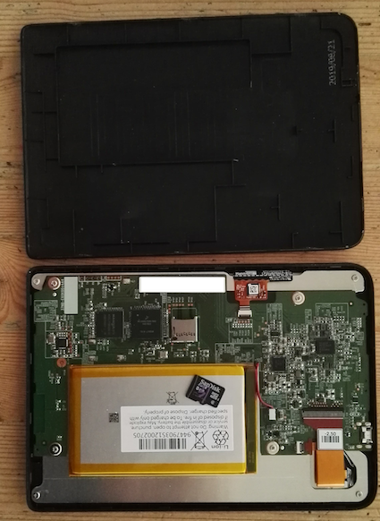

The COVID-19 lockdown in Belgium was officially enforced on noon 18th Mar 2020 but at home we were already quarantined (kids since Carnival holidays, 24th Feb; me from EOB 13th Mar). So on my first official telework day, 16th Mar, I finally decided to buy an ebook reader, and selected Kobo Clara HD.
I like it but still I was curious and looked around for how to hack it. I found that it is possible to change the original SD card (8 GB) with a bigger one and decided to give it a go. This blog post from Lee Yingtong Li got me started.
I opened it, took the SD card out and copied on a bigger one of 128 GB.

It all went well apart from the last 2 lines of text:
Then use a tool like gparted to resize the data partition (the large third partition) on the new microSD card to fill the remaining space.
I tried all kind of things to have gparted running from
a Mac (docker image, Virtual Box) but
what finally worked for me was to have it on a bootable CD ROM (yes I still have an old machine
with CD reader/writer): I burned the ISO image, booted from it and resized the SD card to all
available space.